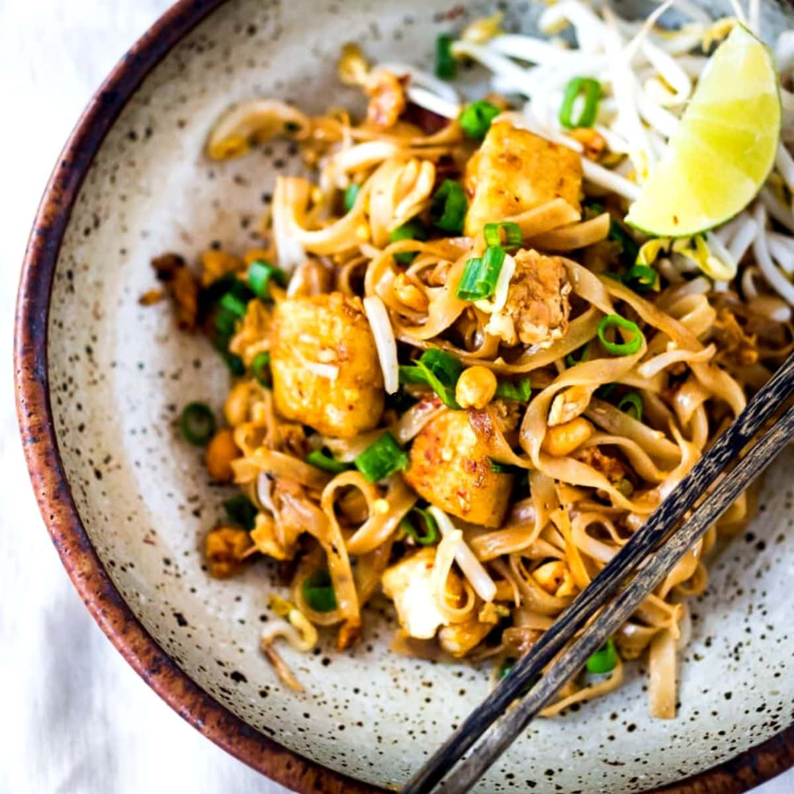

Pad Thai

Thai food favourite for good reason
This is a Pad Thai recipe that truly stacks up to great Thai restaurants yet is totally doable for every home cook with just a trip to your every day grocery store.
With the slippery noodles, signature sweet-savoury flavour, sprinkle of peanuts and tang from lime, this is a Thai food favourite for good reason!
Ingredients
- Dried rice sticks
- Tamarind puree
- Brown sugar
- Fish sauce
- Oyster sauce
- Vegetable oil
- Onion
- Garlic cloves
- Chicken breast or tigh
- Eggs
- Beansprouts
- Tofu
- Garlic chives
- Peanuts
- Lime
Steps
- Place noodles in a large bowl, pour over plenty of boiling water.Soak for 5 minutes, then drain in a colander and quickly rinse under cold water.
- Mix sauce in a small bowl
- Heat 2 tbsp oil in a large non stick pan over high heat. Add garlic and onion, cook for 30 seconds.
- Add chicken and cook for 1 1/2 minutes until mostly cooked through.
- Push to one side of the pan, pour egg in on the other side. Scramble using the wooden spoon, then mix inte chicken.
- Add bean sprouts, tofu, noodles then sauce.
- Toss gently for about 1 1/2 minutes until sauce is absorbed by the noodles.
- Add garlic chives and half the peanuts. Toss through quickly then remove from heat.
- Serve immediately, sprinkled with remaining peanuts and lime wedges on the side, with a sprinkle of chilli and a handful of extra beansprouts on the side if desired.